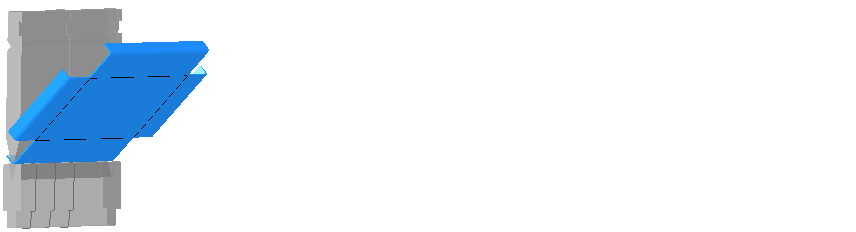

{kind=link}
In questa finestra di dialogo sono impostate le opzioni per la selezione degli utensili e la creazione della sequenza di piegatura. Con le impostazioni corrispondenti si ottiene un calcolo ottimale della sequenza di piegatura.
Con il pulsante Salva come predefinite le impostazioni vengono applicate al pezzo in lavorazione come predefinite con la funzione Automatico.
Tip: Le impostazioni possono essere applicate facendo clic sulla funzione Automatico sul pezzo da piegare.
Impostazioni
Questa opzione impedisce che i lati di un pezzo vengano a contatto tra di loro. Utilizzare questa opzione solo per casi speciali, in quanto limita notevolmente le possibili sequenze di piegatura o anche non consente alcuna sequenza di piegatura.
Tip: Quando i lati sono piegati uno contro l’altro è possibile che questi si tocchino sullo spigolo. Se questa opzione è attivata viene emesso un messaggio di collisione, anche se la piegatura potrebbe essere eseguita senza problemi. Per evitarlo, questa opzione deve essere disabilitata.
Questa opzione ruota l’utensile superiore nel portautensile di 180° quando con la disposizione standard dell’utensile non è possibile trovare il numero delle sequenze di piegatura indicato nell’opzione Numero massimo di sequenze di piegatura.
Questa opzione può essere attivata per permettere l’uso di utensili superiori con altri raggi di curvatura. Se non è possibile utilizzare alcun utensile con lo stesso raggio di curvatura, si cerca un utensile col raggio di curvatura immediatamente minore o maggiore.
NOTE: Con un valore di accorciamento modificato la geometria del pezzo non è adeguata. La modifica dell'accorciamento non ha quindi come conseguenza alcuna modifica della lunghezza del lato del pezzo.
Info: Questa opzione è selezionabile solo quando è attivata l’opzione Selezionare automaticamente l’utensile superiore.
Questa opzione determina la sequenza di piegatura in base alla posizione migliore delle battute posteriori.
Info: L’opzione è selezionabile solo quando nell’opzione Numero massimo di sequenze di piegatura è indicato il numero >1.
Con questa opzione si indica il numero massimo delle soluzioni da cercare per la sequenza di piegatura dei pezzi. Una volta raggiunto il numero, al pezzo viene assegnata la soluzione migliore come sequenza di piegatura.
Info: Per pezzi di piegatura complessi l'aumento del numero può comportare un tempo di calcolo notevolmente più lungo.
Attention! Utilizzare questa funzione solo su lamiere sottili fino a circa 2 mm. Nel caso di lamiere più spesse e grandi valori di tolleranza, è possibile che l’utensile o la macchina piegatrice vengano danneggiati dal pezzo di piegatura a causa di forze troppo elevate nella collisione.
Se una piegatura può essere eseguita soltanto con un contatto minimo dell’utensile superiore o inferiore, immettere nel campo di opzione il valore della tolleranza in gradi. È possibile immettere un valore di tolleranza massimo di 15°. Durante il controllo degli angoli, questo valore di tolleranza è aggiunto al valore nominale dell'angolo di piegatura. Entro questo valore non sarà emesso alcun messaggio di collisione.
NOTE: La deformazione del materiale nella collisione con l'utensile superiore o inferiore deve restare entro l'intervallo elastico del materiale. In caso contrario si andrà incontro ad una deformazione persistente del materiale!
Fig.: Deformazione elastica durante la piegatura
Legenda:
| A | campo di deformazione elastica |
| α | angolo di piegatura massimo senza collisione |
| β | Tolleranza |
Criteri
Questa opzione applica il baricentro del pezzo per la sequenza di piegatura tendenzialmente davanti al pezzo di piegatura o dietro di questo.
Baricentro davanti: Considerare nel caso di lati molto lunghi l’elevata velocità angolare durante la piegatura.
Baricentro dietro: Considerare nel caso di lati molto lunghi che il pezzo di piegatura poggia sul dito di battuta per prevenire una piegatura dei lati.
Fig.: Baricentro del pezzo prima dell’utensile di piegatura

Questa opzione stabilisce se i lati corti o lunghi di un pezzo tendenzialmente debbano essere piegati per primi.
Fig.: Prima la lunghezza di piegatura corta

Questa opzione stabilisce quale piegatura sia eseguita tendenzialmente per prima in confronto alla distanza dal centro dell'pezzo.
Fig.: Continuazione effettuata prima con le parti centrali

L'impostazione influisce sulla forza con cui un criterio per i calcoli della sequenza di piegatura è preso in considerazione. Quanto più un criterio è posizionato in alto, tanto più fortemente è preso in considerazione. Con i tasti freccia è possibile spostare i criteri nella sequenza del loro peso.
Info: I criteri corrispondono alle opzioni superiori e alle loro proprietà impostate. La Manipolazione lamiera fa sì che il pezzo possa essere piegato in modo ottimale.
Per primi vengono elaborati tutti i processi della prima fase. In questo modo la sequenza di piegatura corrisponde alla sequenza di programmazione in caso di programmazione numerica.